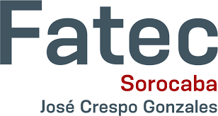
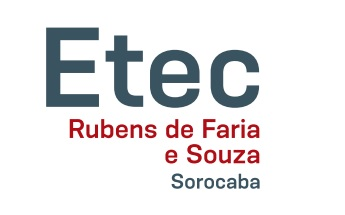

Histórico Acadêmico
FATEC - Sorocaba "José Crespo Gonzales"
Tecnólogo em Análise e Desenvolvimento de Sistemas - 2020
Com carreira solidificada, busquei conhecimentos que abrangessem tanto a área de manutenção eletrônica quanto a área de tecnologia da informação. Atualmente continuo com trabalho na área de manutenção e em paralelo venho desenvolvendo projetos de TI voltados à melhoria do fluxo de trabalho.
SENAI - Gaspar Ricardo Júnior - Sorocaba
Técnico em Mecatrônica - 2008
Com mais experiência na área elétrica, busquei expandir minha área de atuação cursando Técnico em Mecatrônica.
ETEC - Rubens de Farias e Souza - Sorocaba
Técnico em Eletrotécnica - 2005
Atuando na área de manutenção industrial, iniciei este curso para aprimorar e estender os conhecimentos adquiridos.
SENAI - Ary Torres - São Paulo
Eletricista de manutenção eletroeletrônica - 1993
Ingressei no SENAI ainda no último ano do ensino fundamental, no curso de "Reparador de equipamentos eletrônicos" (hoje denominado Eletricista de manutenção eletroeletrônica).